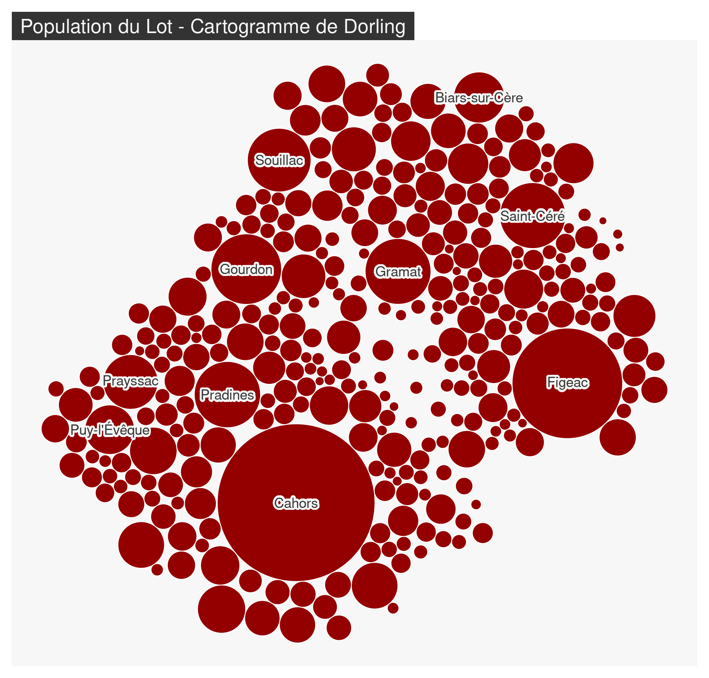
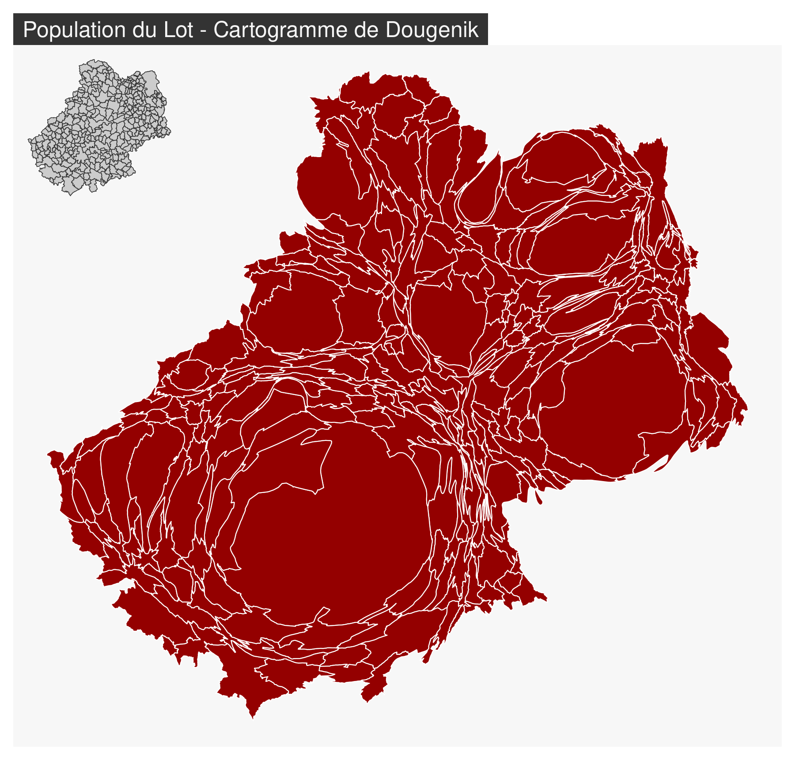

“L’anamorphose classique est une représentation des États (ou de mailles quelconques) par des rectangles ou des polygones quelconques en fonction d’une quantité qui leur est rattaché. (…) On s’efforce de garder l’arrangement général des mailles ou la silhouette du continent.” Brunet et al. (1993)
3 types d’anamorphoses ou cartogrammes sont ici présentés :
Pour réaliser les cartogrammes nous utilisons le package cartogram(Jeworutzki, 2023).
6.1 Les cartogrammes de Dorling
Les territoires sont représentés par des figurés (cercles, des carrés ou des rectangles) ne se recouvrant pas dont les surfaces sont proportionnelles à une variable. Les positions des figurés sont définies selon les positions de départ.
library(mapsf)library(cartogram)
#>
#> Attaching package: 'cartogram'
#> The following object is masked from 'package:terra':
#>
#> cartogram
com <-st_read("data/lot.gpkg", layer ="communes", quiet =TRUE)com_dorling <-cartogram_dorling(x = com, weight ="POPULATION", k =7)mf_map(com_dorling, col ="#940000", border="white")mf_label(x = com_dorling[order(com_dorling$POPULATION, decreasing =TRUE), ][1:10,], var ="NOM_COM",overlap =FALSE, lines =FALSE,halo =TRUE, r = .15)mf_title("Population du Lot - Cartogramme de Dorling")

Le paramètre k permet de faire varier le facteur d’expansion des cercles.
On identifie assez mal l’espace.
On peut nommer les cercles pour se repérer et/ou s’aider de la couleur pour faire apparaître des clusters et mieux identifier les blocs géographiques.
La perception des quantités est très bonne.
Les tailles de cercles sont vraiment comparables.
6.2 Les cartogrammes non continus
La taille des polygones est proportionnelle à une variable. L’agencement des polygones les uns par rapport aux autres est conservée. La forme des polygones est ressemblante.
com_ncont <-cartogram_ncont(x = com, weight ="POPULATION", k =1.2)mf_map(com, border ="white", lwd =0.5,)mf_map(com_ncont, col ="#940000", border="white", add =TRUE)mf_title("Population du Lot - Cartogramme de Olson")
Le paramètre k permet de faire varier le facteur d’expansion des polygones.
La topologie des régions est perdue.
La conservation de la forme des polygones est optimale.
6.3 Les cartogrammes continus
La taille des polygones est proportionnelle à une variable. L’agencement des polygones les uns par rapport aux autres est conservée. Pour conserver la contiguïté, la forme des polygones est fortement transformée.
com_cont <-cartogram_cont(x = com, weight ="POPULATION", prepare ="none", itermax =10)mf_map(com_cont, col ="#940000", border="white", add =FALSE)mf_title("Population du Lot - Cartogramme de Dougenik")mf_inset_on(com, cex = .2, pos ="topleft")mf_map(com, lwd = .5)mf_inset_off()

La forme des polygones est fortement distordue.
C’est une “vraie carte de géographie” : la topologie et la contiguïté sont conservées.
6.4 Forces et faiblesses des cartogrammes
Les cartogrammes sont des représentations cartographiques perçues comme innovantes (bien que la méthode date de 40 ans). Ces images très généralisées rendent bien compte des quantités et des gradients. Ce sont de vraies images de communication qui provoquent, suscitent l’intérêt, véhiculent un message fort, interpellent.
Mais les cartogrammes induisent une perte des repères visuels (difficile de retrouver son pays, ou sa région sur la carte), demandent un effort de lecture qui peut être important et ne permettent pas de gérer des données manquantes.
Brunet, R., Ferras, R. et Théry, H. (1993). Les mots de la géographie: dictionnaire critique. La Documentation française.
Dorling, D. (1996). Area cartograms: their use and creation, concepts and techniques in modern geography (vol. 59, p. 69). Institute of British Geographers.
Dougenik, J. A., Chrisman, N. R. et Niemeyer, D. R. (1985). An algorithm to construct continuous area cartograms. The Professional Geographer, 37(1), 75‑81. https://doi.org/10.1111/j.0033-0124.1985.00075.x